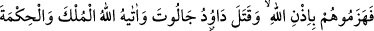
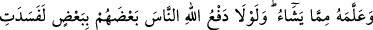
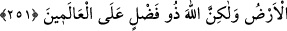

sarsılmaktan ve korkup kaçmaktan bizleri koru. Kâfirleri kahr ü perişan etmek sûretiyle
bize yardım et!”
Bu duâda onlar güzel ve belîğ bir tertîbe riâyet etmişlerdir: Önce her işin başı olan
sabrın gönüllerine akıtılmasını istemişler, sonra üzerinde durdukları ayaklarının sağlam
tutulmasını dilemişler ve nihâyet son olarak düşmana karşı zafer ve yardım talebinde
bulunmuşlardır.
251. Sonunda Allah’ın izniyle onları yendiler. Dâvud da Câlût’u öldürdü. Allah
ona (Dâvud’a) hükümdarlık ve hikmet verdi, dilediği ilimlerden ona öğretti. Eğer
Allah’ın insanlardan bir kısmının kötülüğünü diğerleriyle savması olmasaydı elbette
yeryüzü altüst olurdu. Lâkin Allah, bütün insanlığa karşı lütuf ve kerem sahibidir.
Hâk Teâla hazretleri, Tâlût ve askerlerinin duâsını kabûl etti de onlar, Câlût ve
ordusunu hezîmete uğrattılar. Dâvud da Câlût’u öldürdü. Câlût, Amlîk b. Âd
oğullarından güçlü ve kuvvetli bir kimse olup zamanında Amâlika halkının reis ve
hükümdarı idi. Tek başına orduları bozup hezîmete uğratırdı. Onun, üç yüz rıtıl
(yaklaşık 122 kg.) demirden yapılmış bir miğferi vardı. Boyunun uzunluğu kadar gölgesi
bir mil (1848 m.) idi.
Dâvud (a.s.)’ın babası Eyşâ da, Tâlût ile beraber ırmağı geçenler arasında idi.
Yanında yedi oğlu bulunmaktaydı. Bunların en küçüğü Dâvud olup koyun güderdi.
Ordunun peygamberi olan İşmûîl’e, Câlût’u öldürecek olanın Eyşâ oğlu Dâvud olacağı
vahyedildi. İşmûîl, Dâvud’un, yanına getirilmesini talep etti ve getirildi. Ona dedi ki:
“Şüphesiz Allah, Câlût’un senin elinle öldürülmesini murad buyurmuştur. Bu sebeple
savaşmak üzere bizimle beraber gel.”
Dâvud, onlarla beraber çıktı. Yolda bir taşa rastladı. Taş ona: “Ey Dâvud, beni yanına
al ve taşı. Çünkü ben, Hârûn (a.s.)’ın benimle falan hükümdarı öldürdüğü taşım.” diye
seslendi. Dâvud onu heybesine koyup yürüdü. Sonra başka bir taşa rastladı. Taş ona:
“Beni yanına al. Çünkü ben, Hz. Mûsâ’nın kendisiyle falan falan kimseleri öldürdüğü
taşım.” diye nidâ etti. Dâvud (a.s.) bu taşı da heybesine koyup yola devam etti. Sonra
bir taş daha ona: “Beni yanına al. Çünkü Câlût’u benimle öldüreceksin.” dedi. Onu da
heybesine koydu.
Ok, taş vesâir şeyler atıp öldürmek Dâvud’un âdetinden idi. Kurt, aslan ve pars gibi
herhangi bir canlıya attığı taş muhakkak isâbet ile onu helâk ederdi. Her iki ordu, saflar
halinde dizilince Câlût, kendisiyle savaşması için müslümanlardan birini mübârezeye
davet etti. Kimse çıkmayınca şöyle dedi: “Ey İsrâîloğulları, eğer siz hak üzere olsa